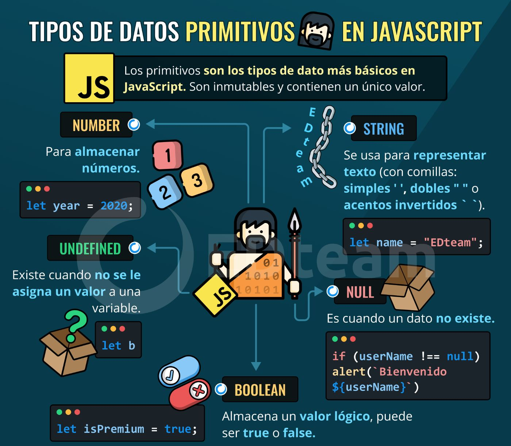

Tipos de datos primitivos en JavaScript
Los datos primitivos son los valores más básicos que puede manejar JavaScript y no tienen propiedades ni métodos propios.

Listado de tipos primitivos
- String: texto (ej.
"hola"). - Number: números (ej.
3.14). - Boolean:
trueofalse. - null: ausencia intencional de valor.
- undefined: variable sin valor asignado.
- Symbol: identificador único.
- BigInt: enteros muy grandes.
Ejemplos
let nombre = "Ana";
let edad = 28;
let activo = true;
let noValor = null;
let indef; // undefined
let id = Symbol("id");
let numeroGrande = 123456789012345678901234567890n;
Nota: por motivos históricos typeof null devuelve "object".